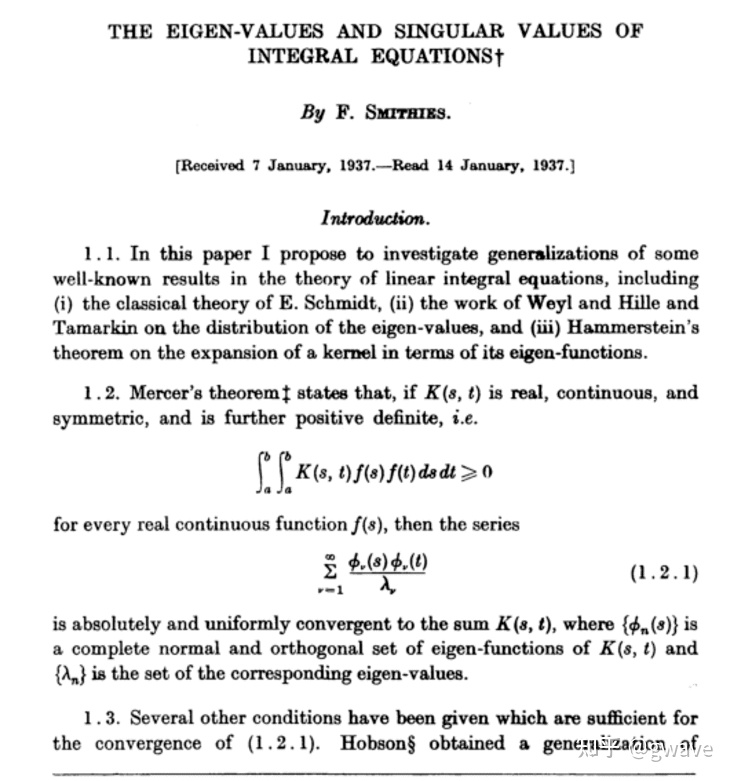
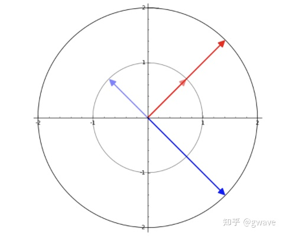
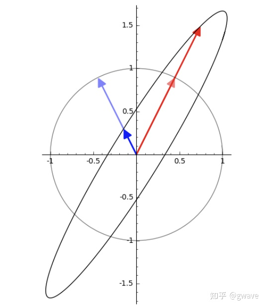
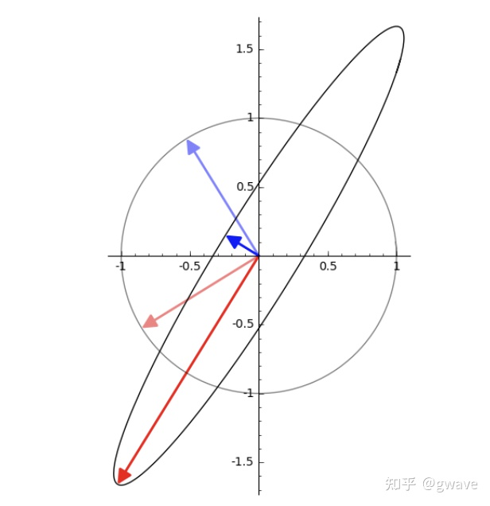

奇异值与特征值辨析 (轉載)
奇异值 (Singular Value) 与特征值 (Eigenvalue) 是两个极其重要而又相关的概念，但也常令人困惑，它们各自的本质和差异是什么？
1907 年，奇异值 (Singular Value) 的概念由德国数学家 Erhard Schmidt 提出 (Beltrami, Jodan 等 5 位数学家都有贡献)，还记得 Gram-Schmidt 求标准正交基的方法吗？当时 Schmidt 称奇异值为 "eigenvalues"，即今天特征值所用的词，直到 1937 年，奇异值 "Singular value" 这个词才由 F. Smithies 开始使用。术语都曾是同一个词，也难怪大家容易混淆。

数据时代，SVD 已成为最重要矩阵分解。它提供的数值稳定的矩阵分解方法，被广泛应用于数据科学中：矩阵的低秩近似靠它，伪逆计算靠它，PCA 的底层逻辑是它，它还非常靠谱，确保解存在，而特征值就不好说了......奇异值这么重要，但它到底 “奇异” 在哪？
特征值也非常重要，体现了矩阵内禀的性质：薛定谔方程中它对应能量，马尔可夫均衡态计算的关键，微分方程中相图的边界，谱聚类中所谓的谱即特征值......。但由于只有方阵才有特征值，实际应用中方阵较少，因此一般都会左自乘： \(A^T A\) ，得到性质优良的对称矩阵 \(S\)， \(S\) 被 Gilbert Strang 称为线性代数的皇帝。
目錄
- 概念与定义对比
- 特征值与特征向量
- 奇异值与奇异向量
- 辨名与起源
1. 概念与定义对比
奇异值与特征值都被用于描述矩阵作用于某些向量的标量，都是描述向量模长变化幅度的数值。它们的差异在于：
- 特征向量描述的是矩阵的方向不变作用 (invariant action) 的向量；
- 奇异向量描述的是矩阵最大作用 (maximum action) 的方向向量。
这里的 “作用” (action) 所指的矩阵与向量的乘积得到一个新的向量，几何上相当于对向量进行了旋转和拉伸，就像是对向量施加了一个作用 (action)，或者说是变换。
定义：
- 如果有向量 \(v\) 能使得矩阵 \(A\) 与之的积 \(Av=\lambda v\) ，\(\lambda\) 为标量，那么 \(\lambda\) 和 \(v\) 就分别是 \(A\) 的特征值与特征向量。
- 如果存在单位正交矩阵 \(U\) 和 \(V\) ，使得 \(A=U\Sigma V^{T}\)， \(\Sigma\) 为对角矩阵，对角线上的值被称为奇异值，\(U\) 和 \(V\) 中的列分别被称为 \(A\) 的左奇异向量和右奇异向量。
关联：奇异值是正交矩阵特征值的绝对值：\({\sqrt {Q^{*}Q}}={\sqrt {U\Lambda ^{2}U^{*}}}=U\ |\Lambda |\ U^{*}\)， \(Q^{*}\) 为共轭转置矩阵，实数情况下即 \(Q^{T}\)。
2. 特征值与特征向量
从定义中可看出，特征向量给出了方向不变作用的方向。当作用于特征向量时 (\(Ax\))，它只是将特征向量 \(x\) 数乘一个标量 (对应的特征值 \(\lambda\))，相当于将 \(x\) 长度缩放 \(\lambda\) 倍，若 \(\lambda\) 为正，\(x\) 方向保持不变；否则，\(x\) 方向反转。
例如：\(A=\begin{bmatrix}0&2\\2&0\end{bmatrix}\)
\(|\lambda E-A|=\left | \begin{matrix}\lambda&2\\2&\lambda\end{matrix}\right | ={\lambda}^{2}-4=0\)，故 \(\lambda_1=2,\lambda_2=-2\)
\(Ax=\lambda_1 x, Ax=2 x, x=\begin{bmatrix}1\\1\end{bmatrix}\)
\(Ax=\lambda_2 x, Ax=-2 x, x=\begin{bmatrix}-1\\1\end{bmatrix}\)

同样的，对于矩阵 \(A=\begin{bmatrix}1&\frac{1}{3}\\\frac{4}{3}&1\end{bmatrix}\)，单位圆被变换为椭圆，特征向量是所有向量中经过线性变换(乘以 \(A\))后，方向不变的向量。

3. 奇异值与奇异向量
特征向量不变的方向并不保证是拉伸效果最大的方向，而这是奇异向量的方向。
奇异值是非负实数，通常从大到小顺序排列。
\(\sigma_{1}\) 是矩阵 \(A\) 的最大奇异值，对应右奇异向量 \(v\)。\(v\) 是 \(\mathop{\arg\min}_{x,|x|=1}(||Ax||)\) 的解，换句话说：在 \(A\) 与所有单位向量 \(x\) 的乘积中，\(Av=\sigma_{1}\) 是最大的；但不保证乘积后方向不变。
下图的的变换中：单位圆变成椭圆，奇异向量对应椭圆的半长轴，不同于上例中同一矩阵的特征值方向。

方向不变和拉伸最大都是矩阵内禀的性质，方向不变在马尔可夫随机场中非常重要；而拉伸最大的方向则是数据方差分布最大的方向，所含信息量最大，是 PCA 等方法中的核心思想。如果要说 “奇异”，大约就在于最大拉伸方向吧。
4. 辨名与起源
"eigen" 在德语中的意思是 “own”，“自己的”。特征值和特征向量起源于 18 世纪欧拉和拉格朗日对于旋转刚体的研究，拉格朗日发现：主轴是刚体惯性矩阵的特征向量。之后，柯西、傅立叶、拉普拉斯等近多位科学家进行了相关的工作。1904年，希尔伯特 (David Hilbert) 在研究积分号的特征值时，首先使用德语 "eigen" 和英语的组合：eigenvalues 和 eigenvectors，成为了今天的标准术语。总之，特征值和特征向量是矩阵 "自己的" 性质。
虽然 Singular value 作为术语在泛函分析中有明确的定义，但是理解时，这里的 Singular，更接近这个词的英文本意 “exceptionally good or great; remarkable”，“特别好”，SVD 大法真的特别好！
- 酉矩阵单位正交，是讨论 n 维空间的理想工具；
- 稳定，对矩阵的微扰即对对角矩阵的微扰，反之亦然；3）
- 对角矩阵可以很容易确定矩阵是否接近秩退化矩阵，If yes, 可低秩近似 4）
- 高效稳定的SVD分解算法
參考
- Singular value - Wikipedia
- Understanding Eigenvalues and Singular Values
- On the Early History of the Singular Value Decomposition | SIAM Review | Vol. 35, No. 4 | Society for Industrial and Applied Mathematics